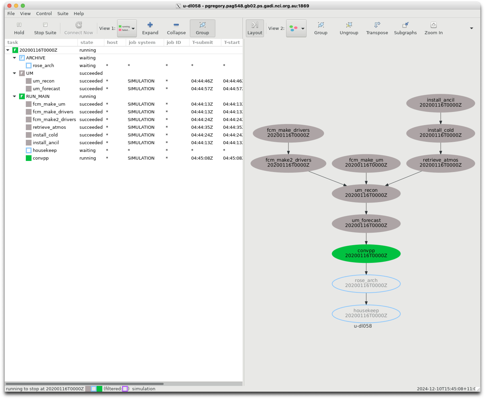
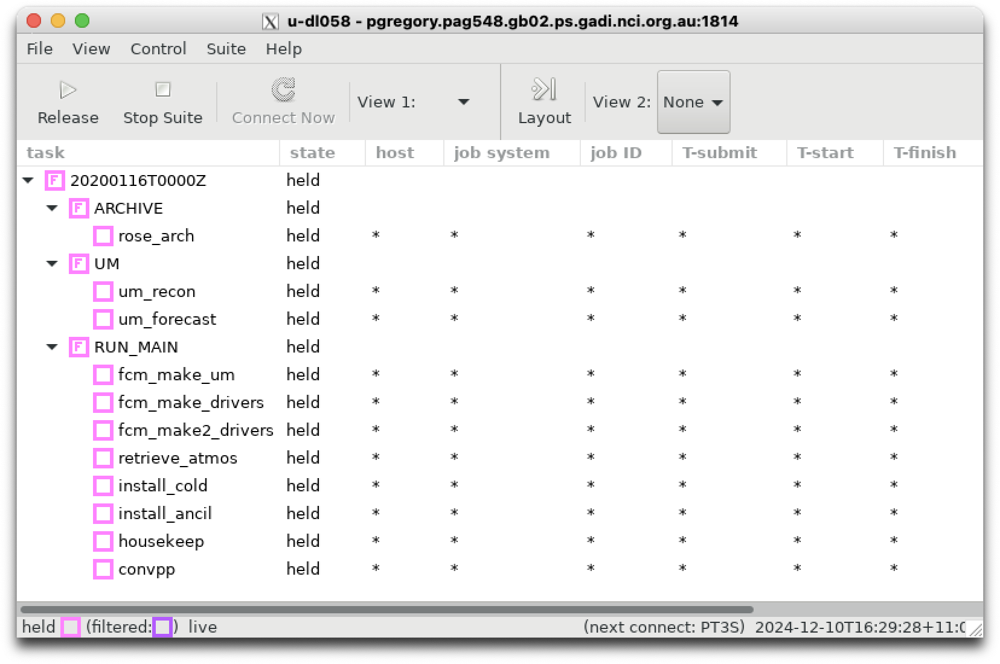
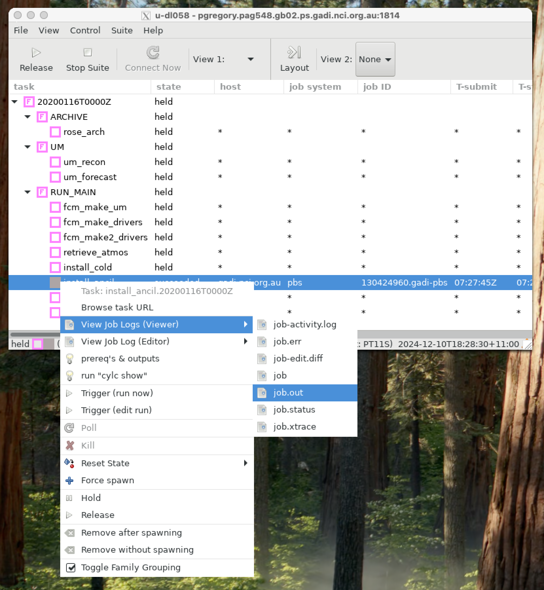
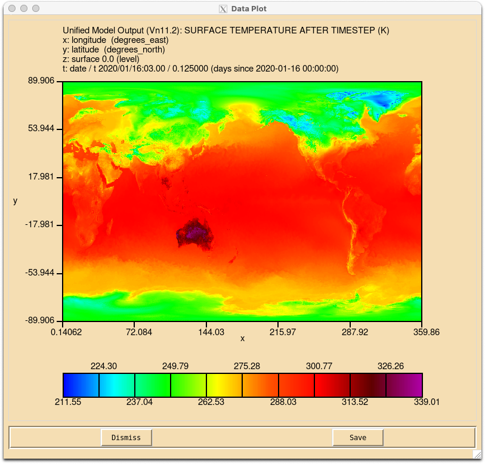
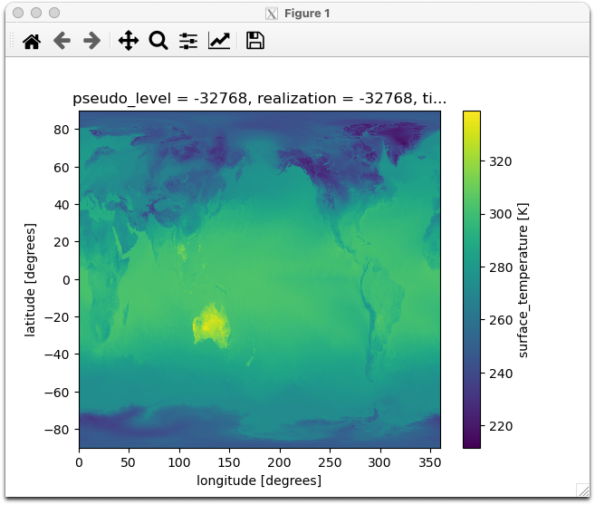

The Unified Model#
The ACCESS modeling suite is reliant on the UK Met Office’s Unified Model (UM) for atmospheric simulations.
The UM is a collection of Fortran-based executables built to simulate the future state of the atmosphere. It is designed to interface with land/surface and sea-surface data.
The model is so named (i.e. “Unified”) because it contains a single set of code that can be applied across a diverse range of length and timescales; from urban weather forecasts at grid resolutions of a few hundred metres, to global climate model projections extending into next century at grid resolutions of hundreds of kilometres.
You can access more detailed information about the UM here : https://21centuryweather.github.io/UM_summary_docs/introduction.html
For now, let’s concentrate on running a very simple test suite, a ‘minimal working example’ to demonstrate how we can run the UM on gadi using a rose/cylc suite.
Quick Start Guide#
To run the UM quickly.
Start a persistent session on
gadiand login to it.Pass MOSRS authentication
Load your
cylcmodules$ rosie co u-dl058$ cd ~/roses/u-dl058In
~/roses/u-dl085/rose-suit.conf, check you have write permissions to the folderARCHDIR, defined as/scratch/${PROJECT}/${USER}. If you don’t know your defaultgadiproject, see here.$ rose suite-run
Checking out a UM suite#
If you need to, repeat the steps of the previous tutorial to login to your persistent session and authenticate your MOSRS credentials. Then, checkout suite u-dl058 using
rosie co u-dl058
This suite was initially developed by scientists at the Bureau of Meteorology to research ‘coupled’ Numerical Weather Prediction using separate atmospheric and ocean models. For this tutorial, we have removed all rose/cylc logic related to ocean coupling so the suite performs a simple atmosphere/land simulation at low resolution.
Examining the suite#
The suite contains all the usual files you’ve become accustomed too inside a rose/cylc suite:
A
rose-app.conffile to control the master configuration of the suite.A
suite.rcfile to control the task flowAn
appdirectory to house.conffiles for each application task.
Let’s step through each task within this suite so we understand at a basic level, how the UM works on gadi.
Master configuration#
Let’s quickly run through the master configuration file : ~/roses/u-dl085/rose-suite.conf
This contains a list of bash environment variables which describe the following:
ANCILDATA: Ancillary data directoryARCHDIR: Output archive directoryARCHIVE_6HR: Archiving temporal frequencyATM_PPN: Number of processors for atmospheric tasksBUILD_UM: Flag to compile our own UM executableCALENDAR: Calendar type (important for long climate simulations)COMPUTE_ACCOUNT: Your gadiPROJECTused for resource allocationCOMPUTE_HOST: Name of supercomputerCOMPUTE_QUEUE: PBS job queue used for simulationsCONFIG_MODULE_NAME: Extra module configuration dataCORE: Type of CPU used in supercomputer environmentDATES: List of dates to run simulations forEXTRACT_HOST: operating system typeHOUSEKEEP: Flag to set housekeeping tasksOCEANDIR: Location of Ocean dataPPN: Number of processors (generic)QUEUE_PARALLEL: PBS job queue typeRUNTYPE: Flag for ‘coupled’ (modeling both the ocean and atmosphere) or ‘uncoupled’ (atmosphere only) simulation.SITE: String to denote the supercomputer typeSTOCHASTIC: Flag for stochastic atmospheric physicsTASKLENGTH: Data for UM task controlTASK_RUN: Data for UM task controlTASK_TESTS: Flag for UM task controlUMDIR: Master directory for UM filesUM_RESOLUTION: Global atmospheric resolutionUSE_COMORPH: Flag for CoMorph convection schemeUSE_DOUBLE_PREC: Flag for numerical precisionxios_path: Directory ofxioslibraries used by intel compilers. XIOS is an XML input/output server used to handle coupling between the UM atmosphere and the NEMO ocean model.oasis3_mct_path: Directory of intel libraries to compile this version of the UM which supports theoasis3coupler.
Warning
The default value of ARCHDIR is /scratch/${PROJECT}/${USER}/GC5_runs. This directory /scratch/${PROJECT}/${USER}/ must exist and you must have write permissions to it, otherwise your outputs won’t be saved. The value of the bash environment variable PROJECT is set in the .config/gadi-login.conf file in your home directory. This is your ‘default’ gadi project. See here for more information.
You can always manually edit the value of ARCHIDIR to override the value of PROJECT if you want. Just remember to reload the rose suite again to update the definitions used in the ~/cylc-run directory.
Task flow#
Let’s walk through the suite.rc file to determine the task flow.
Before we get to the graph section, there are several jinja macros (defined using {% %} constructs) that do the following:
Set an alias for the rose
TASK_RUN_COMMANDload the required
moduleson gadiSet some run-time options based on entries in the
rose-suite.conffile, including:Numerical precision
Archiving frequency
‘CoMorph’ convection scheme
Stochastic physics settings
Set aliases for dates based on the input
DATESSet the ensemble number to zero. This suite was originally designed to handle ensemble forecasting and there is ensemble logic embedded in many tasks and scripts. For simplicity’s sake, we have removed all the ensemble looping logic and just run the control forecast, i.e
I = 000.
The [cylc] namespace is for all non task-related configurations. Here we set UTC mode to true. The [events] namespace allows us to sent notification emails after shutdown.
In the [scheduling] namespace we define the number of cycle points based on the input dates. In this example, we only run a single forecast date : “20200116T00”
In the [dependencies] namespace, we first define the graph to tasks that occur only once : fcm_make_um, install_ancil, install_cold, fcm_make_drivers and fc_make2_drivers.
We then use a jinja macro to loop over all possible to dates to define the tasks that run for every forecast date: um_recon, um_forecast, convpp, rose_arch and housekeep.
The jinja macro is defined using {%- for date in SDATES : %} and {%- endfor %}.
Within this loop, the [^] syntax is cylc shorthand for ‘the initial cycle point’, see:
The [runtime] namespace then defines the environment variables and PBS job parameters for each task. The [root] namespace defines common variables and parameters used by most scripts.
Next, there are namespaces for each separate family of tasks. The [ARCHIVE] namespace defines the value for ARCHDIR defined in rose-suite.conf.
Below that, there are several dictionaries and macros used to define PBS queue and resource requirements for a given resolution. The two main computational tasks in the suite are the UM ‘Reconfiguration’ task, and the UM atmospheric forecast task. By default, this suite runs at the lowest available resolution (n320e). The jinja dictionary UM_RES will return a 10-minute PBS job walltime ("PT10M") to the cylc variable RCF_WALL and a 4-hour job walltime ("PT4H")to the variable ATM_WALL. Other variables are used with the jinja macro node to provide the number of compute nodes for the reconfiguration (NODE_RCF) and atmospheric forecast (NODE_ATM) tasks respectively.
The [UM] and [RECONFIGURE] namespaces then specify the resources for each task. Below this, there are separate namespaces (in lower case) for each specific task. Each task will inherit environmental parameters defined in the earlier sections.
This suite.rc file uses an include statement %include site/nci_gadi.rc to include information specific to gadi. When the suite is run, the contents of site/nci_gadi.rc will be included in the overall suite.rc file that is copied to the run directory ~/cylc-run/u-dl058.
For brevity’s sake, we won’t examine the contents of every namespace within site/nci_gadi.rc. But we will note the contents of this file which provides information such as:
PBS walltime limits
PBS compute queue
PBS memory requirements
PBS storage requiremetns
Lists of modules to be loaded
location of ancillary files for each task environment.
You can see how the suite runs by executing
$ rose suite-run -- --mode=simulation
from your ~/roses/u-dl058 directory. This command will run through each task in a ‘simulated mode’ without actually submitting a PBS job.
Note
Make sure you log into into your persistent session and load your cylc modules first before trying to run a rose/cylc suite!
The graph of the suite looks like this.

Task summaries#
Below is a summary of each task. Each task is called using the commands placed in the suite.rc [root] namespace, i.e.
env-script = eval $(rose task-env)
script = {{TASK_RUN_COMMAND}}
where TASK_RUN_COMMAND is defined using the jinja macro
{% set TASK_RUN_COMMAND = "rose task-run --verbose -O '(" + SITE + ")'" %}
The use of rose task-run was covered in the third rose tutorial we covered earlier. If you need refresh your memory, you can review the tutorial here:
https://metomi.github.io/rose/2019.01.8/html/tutorial/rose/suites.html
which states “When run, rose task-run searches for an application with the same name as the Cylc task in the app/ directory.”
Running the suite#
Let’s manually run through each task in this suite, now that we know the order in which tasks are created via the graph above. We can run the suite in hold mode and manually trigger each task. Type
$ rose suite-run -- --hold
in your ~/rose/u-dl085 directory. This will bring up the suite where each task family is coloured in pink. Left-click on the arrows of each task family to expand them.

Now right-click on install_ancil and then left-click Trigger -> Run now.

install_ancil#
This task is run from the app/install_ancil/ directory. It builds symbolic links between the ancillary files located in the ${UM_ANCIL_DIR}/${GL_UM_RES} directory on gadi and your local cylc working directory $ROSE_DATA/etc/ancil_gl/.
The full list of ancillary files required is contained in app/install_ancil/rose-app.conf.
When this task completes, the directory ~/cylc-run/u-dl058/share/data/etc/ancil_gl/will be populated with symbolic links to all the ancillary files.
You can right-click on the task again (which will turn grey after it has successfully) and view the job.out file. The cylc scheduler will nicely capture all the PBS standard output and collate it into the job.out file.

Note
Remember you can also look at the job outputs manually. The latest output for this task will be located at
~/cylc-run/u-dl058/log/job/20200116T0000Z/install_ancil/NN/job.out
Let’s follow the same method and trigger all the remaining tasks in sequence.
install_cold#
This task uses the bash script app/install_cold/bin/install_ver.sh. It will install
~/cylc-run/u-dl058/share/data/etc/um_vertlevs to define the vertical levels of our grid.
It will also link the directory ~/cylc-run/u-dl058/share/fcm_make_surf to a directory on gadi with files associated with the UM’s land-surface model ‘JULES’.
fcm_make_drivers#
This task uses the script app/fcm_make_drivers/ to populate the following directories with python files used to compile the UM.
~/cylc-run/u-dl058/share/fcm_make_drivers/mirror/~/cylc-run/u-dl058/share/fcm_make_drivers/extract/
fcm_make2_drivers#
This repeats the same script but with different environment variables to create and populate the following directories with python files used to compile the UM.
~/cylc-run/u-dl058/share/fcm_make_drivers/build/
retrieve_atmos#
This task is launched using bin/retrieve_atmos_startdumps.sh. It will copy a ‘UM’ atmospheric start-dump to ~/cylc-run/u-dl058/share/cycle/20200116T0000Z/
The start dump file 20200116T0000Z_engl_t+3_000 is a ‘UM’ ‘PP’ file, i.e. a fortran binary record file created by the ‘UM’ itself. You will not be able to view it with a netCDF reader, but you can use the xconv utility to view it on gadi.
$ module use /g/data/access/modules/
$ module load xconv
$ xconv 20200116T0000Z_engl_t+3_000 &
This file is very large (17 Gb!) and it contains both single-level and multi-level variables on a global 1280x 960 grid, with up to 71 levels.
If you plot the surface air temperature using xconv you should generate the following image.

You can also load ‘UM’ files using the ants and iris python modules (developed by the UK Met Office) which are included in the CLEX/ACCESS-NRI analysis3 python environment on gadi.
import ants
import xarray as xr
# This will return a list of iris cube objects
dump = ants.load('20200116T0000Z_engl_t+3_000')
# This will extract the cube for surface temperature
temp, = [ cube for cube in dump if cube.standard_name == 'surface_temperature' ]
# This will convert the cube into an Xarray object
temp_da = xr.DataArray.from_iris(temp)
# A simple plot
temp_da.plot()

This dump file will serve as the initial condition for out atmospheric forecast.
fcm_make_um#
This task will compile a version of the ‘UM’ for us to run our forecast. It executes the files in app/fcm_make_um and creates outputs in ~/cylc-run/u-dl058/share/fcm_make_um. The most important outputs are
The UM atmospheric executable and wrapper scripts located in
~/cylc-run/u-dl058/share/fcm_make_um/build-atmos/bin/um-atmosThe UM reconfigure executable and wrapper scripts located in
~/cylc-run/u-dl058/share/fcm_make_um/build-recon/bin/um-atmos
Some notes on the fcm make process are available here:
https://21centuryweather.github.io/UM_summary_docs/code.html#compilation
um_recon#
This task uses the UM reconfigure executables to take all the input information already assembled (start-dumps, ancillary data) and ‘reconfigure’ it for the required target grid. Most of the time the reconfigure step is just a fancy name for regridding. The task uses the files in app/um. Note the app/um/rose-app.conf file has two command entries:
[command]
default=run_model
recon=um-recon
So the same configuration file can be used to run two different executables depending on the command specified by the cylc workflow engine. Note the suite.rc contains the following:
[[um_recon]]
inherit = UM, RCF_RESOURCE, RECONFIGURE
script = {{TASK_RUN_COMMAND}} --command-key=recon
If you want to know more about the UM reconfiguration process, you click here: https://21centuryweather.github.io/UM_summary_docs/using.html#reconfiguration
The standard output (or ‘stdout’ for short) of the UM reconfigure executable is long and rather interesting. You can scroll through the stdout contained in the um_recon by accessing the um_recon job.out file, either via the cylc gui or using a file editor of choice. It is very common for um_recon to fail when running a new suite configuration for the first time.
Tip
Knowing where to find error messages in the um_recon task is very important, as reconfiguration errors are one of the most common sources of problems when building a new suite (especially a regional model) with the UM.
Note how the reconfigure executable:
Splits itself across various ‘PEs’ or ‘Processing Elements’.
The jobs is submitted 48 CPUs on gadi, although the UM only uses 36 because of the specification of
nproc_xandnproc_y:
Parallel Reconfiguration using 36 procesor(s)
divided into a LPG with nproc_x= 6and nproc_y= 6
It assigns various input files to
fortran Unitnumbers for reading.It reads the land/sea mask file and uses that to define the output grid
IO: Open: /home/548/pag548/cylc-run/u-dl058/share/data/etc/ancil_gl/qrparm.mask on unit 12
Output grid
0 1 307200 3 0 30 1 LAND MASK (No halo) (LAND=TRUE)
CLOSE: File /home/548/pag548/cylc-run/u-dl058/share/data/etc/ancil_gl/qrparm.mask Closed on Unit 12
It reads the input grid from the input startdump file
20200116T0000Z_engl_t+3_000.It computes (on the new grid) all the required fields to begin an atmospheric forecast.
It outputs these fields to `~/cylc-run/u-dl058/share/cycle/20200116T0000Z/umgla000.astart’.
Note the resolution of this .astart file is 640x480, i.e. all input fields have been regridded from the higher resolution start-dump grid to a much coarser grid which corresponds to the specified n320 resolution.
Note n320 refers to a spectral representation of global resolution. Some data in the UM is computed using spectral fields. See https://www.ecmwf.int/sites/default/files/elibrary/2016/17262-new-grid-ifs.pdf for more information.
um_forecast#
This task initialises the atmospheric forecast, using the same app/um files used by um_recon. Let’s look through the stdout of the atmospheric forecast task, either via the cylc gui or using a file editor. It is very common when running a new suite configuration for the first time that the atmospheric forecast task may fail.
Tip
Knowing where to find error messages in the um_forecast task is very important, as numerical errors encountered in the atmospheric forecast step are a common sources of problems when running the UM.
Note the atmospheric executable:
opens the
.astartfile.
OPEN: File /home/548/pag548/cylc-run/u-dl058/share/cycle/20200116T0000Z/umgla000.astart to be Opened on Unit 19 Exists
IO: Open: /home/548/pag548/cylc-run/u-dl058/share/cycle/20200116T0000Z/umgla000.astart on unit 19
loadHeader: Model Version: 13.2
Begins the first timestep
EG_SISL_Resetcon: calculate reference profile
Initialising coarse grids...
Number of multigrid level requested : 3
Number of multigrid level allowed (lon/lat) : ( 5 / 5 )
Level 1: 640 x 480 x 70 = 21504000
Level 2: 320 x 315 x 70 = 7056000
Level 3: 160 x 194 x 70 = 2172800
grid complexity = 1.4292 [ lower bound = 1.3125 ]
...Done
Outputs the maximum vertical velocity at this timestep. Often the forecast model will fail with large, unphysical maximum vertical velocities. Sometimes they can approach the speed of sound ;) These ‘grid-point storms’ are often caused by incorrect or discontinuous data in regions of high orography. The lat/long co-ordinates of the maximum vertical velocity will help you locate bugs. The output of the minimum theta value may also be useful. For high resolution models of Australian region, the Papua New Guinea highlands is often a source of error.
1 Maximum vertical velocity at timestep 0 Max w this run
w_max level proc position run w_max level timestep
0.225E+01 40 139 64.1deg W -23.8deg S 0.225E+01 40 0
The output of the the atmospheric model in this suite integrates forward in time in 12 minute intervals.
You can use the
bashappgrepto search for all the maximum timesteps injob.outand then extract the digits of the subsequent line, e.g.
$ grep -A 1 w_max job.out | grep -P '(^\d+)'
0.225E+01 40 139 64.1deg W -23.8deg S 0.225E+01 40 0
0.125E+01 67 325 151.9deg W 57.6deg N 0.225E+01 40 0
0.148E+01 67 325 151.3deg W 57.9deg N 0.225E+01 40 0
0.120E+01 68 164 57.9deg W -19.3deg S 0.225E+01 40 0
0.124E+01 67 325 150.8deg W 57.9deg N 0.225E+01 40 0
0.120E+01 68 122 40.5deg E -24.9deg S 0.225E+01 40 0
etc. This task ends by writing the following files in `~/cylc-run/u-dl058/share/cycle/20200116T0000Z/’:
umglaa_pa000toumglaa_pa024in six hourly intervalsumglaa_pb000toumglaa_pa024in a 24 hourly intervalumglaa_pc000toumglaa_pc024in a 24 hourly intervalen000_umgla.dailyen000_umgla.ecycen000_umgla.especen000_umgla.trmmen000_umgla.toarad
These are all UM binary ‘pp’ files containing a variety of atmospheric variables on various grids. The STASH settings in the UM namelists will determine which variables are output and at what frequency.
convpp#
This task runs various scripts located in app/convpp to convert these ‘pp’ files to netCDF format. The converted netCDF files are located in `~/cylc-run/u-dl058/share/cycle/20200116T0000Z/nc’
rose_arch#
This task uses scripts located in app/rose_arch to copy the netCDF files to the archive directory ARCHDIR specified in rose-suite.conf.
housekeep#
This task runs a very simple command in suite.rc:
script = rm -r $ROSE_DATAC
which deletes the directory /cylc-run/u-dl058/share/cycle/20200116T0000Z/.
Congratulations! You’ve just run your first UM suite using rose/cylc
Viewing the outputs#
The suite will output the netCDF files to the location defined in ARCHDIR in the rose-suite.conf file, which by default is equal to
ARCHDIR='/scratch/${PROJECT}/${USER}/GC5_runs'
A simple python notebook to load the data in this and compare it other suite output is available at